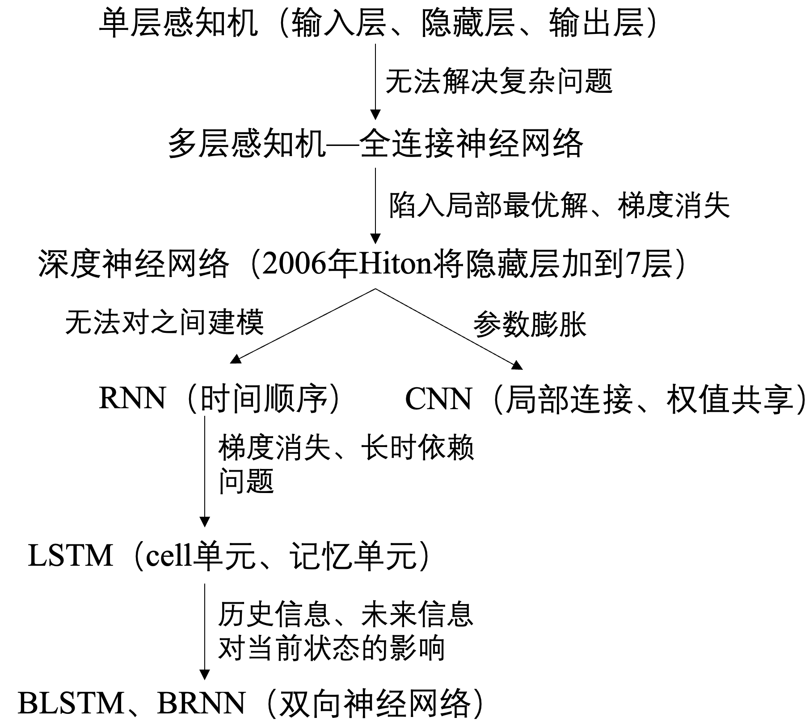

Interview Experience
基础知识
机器学习
线性和逻辑回归模型
经典的机器学习模型，用于解决分类和回归问题。
- 线性模型（Linear Models）：一种基本的统计模型，用于建立输入特征与输出之间的线性关系。基本形式是：
y = w₁x₁ + ... + wₙxₙ + b，y表示输出变量，x₁, ..., xₙ表示输入特征，w₁, ..., wₙ表示特征的权重，b表示偏差或截距。模型通过学习特征的权重和偏差，以最小化预测值与真实值之间的差距。线性模型简单、可解释性强、计算效率高，适用于特征与输出之间存在线性关系的问题。 - 逻辑回归模型（Logistic Regression）：一种用于二分类问题的线性模型，通过逻辑函数（sigmoid函数）将线性模型的输出转化为概率值，从而进行分类。逻辑回归模型的基本形式是：
p = 1 / (1 + exp(-(w₁x₁ + ... + wₙxₙ + b)))其中，p表示样本属于某个类别的概率。模型通过学习特征的权重和偏差，以最大化似然函数或最小化对数损失函数来拟合训练数据，并进行分类预测。逻辑回归模型模型简单、可解释性强、计算效率高，广泛应用于二分类问题。逻辑回归模型还可以通过正则化技术来防止过拟合。 - 区别：
- 输出类型：线性模型常用于回归问题，输出是连续值。逻辑回归模型用于二分类问题，输出是概率值或类别标签。
- 输出转换：线性模型直接使用线性函数进行预测。逻辑回归模型通过逻辑函数（sigmoid函数）将线性模型的输出转化为概率值，从而进行分类。
- 损失函数：线性模型通常使用均方误差MSE或平均绝对误差等回归损失函数。逻辑回归模型使用对数损失函数或交叉熵损失函数来最小化分类误差。
- 联系：
- 线性模型是逻辑回归模型的一种特例。当逻辑回归模型中只有一个二分类输出变量，并且特征与输出之间存在线性关系时，逻辑回归模型退化为线性模型。
- 逻辑回归模型可以使用线性模型的方法进行参数估计。逻辑回归模型的参数估计可以通过最大似然估计或梯度下降等方法来获得，类似于线性模型的参数估计。
线性回归
逻辑回归
偏差与方差
令y表示数据的label，f(x)表示测试数据的预测值，$\overline{f(x)}$表示学习算法对所有数据集的期望预测值。则偏差表示期望预测值$\overline{f(x)}$与标记y之间的差距，差距越大说明偏差越大；而方差是测试预测值f(x)与预测值的期望值$\overline{f(x)}$之间的差距，差距越大说明方差越大。偏差表征模型对数据的拟合能力；而方差表征数据集的变动导致的学习性能的变化，也就是泛化能力。
Layer Normalization
LayerNorm归一化技术，对模型中每个子层的输入归一化处理，使得每个特征的均值为0，方差为1。有助于缓解内部协变量偏移的问题，提高模型的训练效率和鲁棒性。作用：
- 改善模型的收敛性：对输入归一化可以减少梯度的变化范围，提高训练的稳定性和速度。
- 增强模型的泛化能力：使模型对输入的变化具有更好的适应性，提高模型在不同数据分布上的泛化性能。
- 减少模型对超参数的敏感性：可以减少模型对学习率、初始化等超参数的敏感性，使模型更易于调优。
SVM
PCA
聚类算法
数据不均衡
数据不均衡（如正例很少，负例很多）解决办法：
- 欠采样：对负例进行欠采样。一种代表性算法是将负例分成很多份，每次用其中一份和正例一起训练，最后用集成学习综合结果。
- 过采样：对正例进行过采样。一种代表性方法是堆正例进行线性插值来获得更多的正例。
- 调整损失函数：训练时正常训练，分类时将数据不均衡问题加入到决策过程中。例如在我做的文本检测项目中，正常训练，但是判断某个像素是否是文本时 $Loss=-\beta{Y}log\hat{Y}-(1-\beta)(1-Y)log(1-\hat{Y})$，其中Y是样本的标记，$\hat{Y}$是预测值，β是负样本和总体样本的比值。通过加入 β和1−β使得数量较少的正样本得到更多的关注，不至于被大量的负样本掩盖。
- 组合/集成学习：例如正负样本比例1:100，则将负样本分成100份，正样本每次有放回采样至与负样本数相同，然后取100次结果进行平均。
残差连接
Residual Connection跳跃连接技术，在模型中将输入信号与输出信号进行直接连接。作用：
- 促进信息传递：使模型更容易传递信息和梯度，避免梯度消失或梯度爆炸，特别是在处理深层网络时。
- 简化优化问题：可以简化优化问题，使模型更易于优化和训练。
- 提高模型表达能力：允许模型保留更多的低层特征信息，使模型更好地捕捉输入序列中的细节和上下文信息。
特征选择
目标是从原始特征集中选择最相关、最有用的特征，以提高模型性能和泛化能力。常用特征选择方法：
- 过滤式：独立于学习算法，据特征的统计属性对特征评估和排序。包括相关系数、卡方检验、信息增益、互信息法等。过滤式方法计算快速、简单，适用于高维数据，但可能忽略特征之间的相互关系。
- 方差选择：计算特征在数据中的方差来判断是否保留。特征方差低于预先设定的阈值，这个特征可能没有足够的变化，对分类回归任务可能没有太大贡献，可以被移除。
- 相关系数：用来衡量两个变量之间线性关系强度的指标。计算特征与目标变量之间的相关系数，选择与目标变量具有较高相关性的特征。
- 卡方检验：适用于分类问题中的特征选择。计算特征与目标变量之间的卡方统计量，来衡量特征和目标之间的独立性。选择卡方值较大的特征，与目标变量更相关。
- 互信息：衡量两个变量之间相关性的指标。计算特征与目标变量之间的互信息，选择与目标变量具有较高互信息的特征。
- 嵌入式（Embedded）：特征选择与学习算法的训练过程结合，特征选择作为学习算法的一部分。在学习算法中直接考虑特征的重要性，通过正则化、惩罚项或决策树剪枝等方式选择特征。嵌入式方法包括L1正则化（Lasso）、决策树的特征重要性、正则化的线性模型等。嵌入式方法可以在模型训练过程中自动选择特征，减少了特征选择的额外计算开销。
- 包裹式（Wrapper）：使用机器学习模型评估特征的重要性。在特征子集上进行交叉验证，选择性能最好的特征子集进行特征选择。基于树模型的方法（如决策树和随机森林）可以评估特征的重要性。树模型通过计算特征在树中的分裂次数和平均分裂增益衡量特征对模型的贡献。它直接使用最终学习算法对每个特征子集进行评估，可以更好地捕捉特征之间的相互作用。包裹式方法包括递归特征消除和遗传算法等。包裹式方法计算开销大、耗时长，适用于小规模数据和特定问题。
排序模型
旨在根据用户偏好和上下文信息，预测每个项目的相关性或排名，为用户提供最相关和个性化的结果。模型输入包括：
- 特征：描述每个项目的属性和上下文信息，如项目标签、关键词、评分、发布时间、用户特征等。特征可以是离散的、连续的或文本类型的。
- 用户信息：包括用户历史行为、兴趣偏好、地理位置等，用于个性化推荐和排序。
- 上下文信息：指在排序过程中可能影响用户偏好的其他因素，如时间、设备类型、浏览环境等。
常见排序模型包括：
- 点击率预测模型：通过预测用户点击每个项目的概率进行排序。包括逻辑回归、梯度提升树、神经网络等。
- 排序神经网络：使用神经网络来学习项目之间的相对排名关系。包括RankNet、LambdaRank和ListNet等。
- 线性模型和特征工程：基于线性模型结合特征工程技术学习特征权重和组合。包括线性回归、排序SVM等。
- 排序树模型：使用决策树排序，如LambdaMART和GBDT等。
模型训练中常用损失函数包括交叉熵损失函数、均方误差损失函数、排序损失函数（如NDCG）等。为提高排序模型性能，可以采用特征选择、特征组合、正则化等技术。
GBDT
一种基于boosting增强策略的加法模型，训练时采用前向分布算法进行贪婪学习，迭代地训练一系列弱学习器，并将它们组合成一个强大的集成模型。每次迭代都学习一棵CART树来拟合之前t-1棵树的预测结果与训练样本真实值的残差。
LR和GBDT
LR是线性模型，可解释性强，很容易并行化，但学习能力有限，需要大量的人工特征工程。GBDT是非线性模型，具有天然的特征组合优势，特征表达能力强，但是树与树之间无法并行训练，且树模型很容易过拟合；当在高维稀疏特征的场景下，LR的效果一般会比GBDT好。
RF和GBDT
相同点：都是由多棵树组成，最终的结果都是由多棵树一起决定。
不同点：
- 集成学习：RF属于bagging思想，而GBDT是boosting思想
- 偏差-方差权衡：RF不断的降低模型的方差，而GBDT不断的降低模型的偏差
- 训练样本：RF每次迭代的样本是从全部训练集中有放回抽样形成的，而GBDT每次使用全部样本
- 并行性：RF的树可以并行生成，而GBDT只能顺序生成(需要等上一棵树完全生成)
- 最终结果：RF最终是多棵树进行多数表决（回归问题是取平均），而GBDT是加权融合
- 数据敏感性：RF对异常值不敏感，而GBDT对异常值比较敏感
- 泛化能力：RF不易过拟合，而GBDT容易过拟合
XGBoost
eXtreme Gradient Boosting用于解决分类和回归问题。基于梯度提升框架，集成多个弱学习器（决策树）逐步改善模型的预测能力。原理：
- 损失函数：回归问题常用平方损失函数；分类问题常用对数损失函数。
- 弱学习器：用决策树作弱学习器。决策树是一种基于特征的分层划分，每个节点对应一个特征及其划分条件。XGBoost中决策树通过贪婪算法生成，每次选择最大程度降低损失函数的特征和划分点。
- 梯度提升：使用梯度提升法集成多个弱学习器。每轮迭代中根据当前模型的预测结果计算损失函数的梯度，并将其作为新目标训练。新弱学习器通过拟合当前目标逐步改进模型预测能力。为控制每个弱学习器的贡献，引入了学习率缩小每轮迭代的步长。
- 正则化：防止模型过拟合。正则化项由两部分组成：L1正则化（Lasso）和L2正则化（Ridge）。L1正则化使部分特征权重变零，实现特征选择；L2正则化对权重惩罚，降低模型的复杂度。
- 树剪枝：构建决策树采用自动树剪枝策略。计算每个叶节点的分数与正则化项比较，决定是否剪枝。剪枝过程从树的底部开始，逐步向上剪除对模型贡献较小的分支。
- 特征重要性评估：提供一种度量特征重要性的方法，评估每个特征对模型预测的贡献程度。训练中会跟踪每个特征被用于划分的次数及划分后带来的增益。计算特征的重要性得分。
为什么快
- 分块并行：训练前每个特征按特征值进行排序并存储为Block结构，后面查找特征分割点时重复使用，并且支持并行查找每个特征的分割点
- 候选分位点：每个特征采用常数个分位点作为候选分割点
- CPU cache 命中优化： 使用缓存预取的方法，对每个线程分配一个连续的buffer，读取每个block中样本的梯度信息并存入连续的Buffer中。
- Block 处理优化：Block预先放入内存；Block按列进行解压缩；将Block划分到不同硬盘来提高吞吐
防止过拟合
- 目标函数添加正则项：叶子节点个数+叶子节点权重的L2正则化
- 列抽样：训练的时候只用一部分特征（不考虑剩余的block块即可）
- 子采样：每轮计算可以不使用全部样本，使算法更加保守
- shrinkage: 可以叫学习率或步长，为了给后面的训练留出更多的学习空间
处理缺失值
- XGBoost允许特征存在缺失值。在特征k上寻找最佳 split point 时，不会对该列特征 missing 的样本进行遍历，而只对该列特征值为 non-missing 的样本上对应的特征值进行遍历，通过这个技巧来减少了为稀疏离散特征寻找 split point 的时间开销。
- 在逻辑实现上，为了保证完备性，会将该特征值missing的样本分别分配到左叶子结点和右叶子结点，两种情形都计算一遍后，选择分裂后增益最大的那个方向（左分支或是右分支），作为预测时特征值缺失样本的默认分支方向。
树停止生长条件
- 当新引入的一次分裂所带来的增益Gain<0时，放弃当前的分裂。这是训练损失和模型结构复杂度的博弈过程。
- 当树达到最大深度时，停止建树，树深度太深容易过拟合，需要设置一个超参数max_depth。
- 引入一次分裂后，重新计算新生成的左、右两个叶子结点的样本权重和。如果任一个叶子结点的样本权重低于某一个阈值，也会放弃此次分裂。这涉及到一个超参数:最小样本权重和，是指如果一个叶子节点包含的样本数量太少也会放弃分裂，防止树分的太细。
处理不平衡数据
- 如采用AUC评估模型性能，可以通过设置scale_pos_weight参数来平衡正样本和负样本的权重。如正负样本比例为1:10时，scale_pos_weight可以取10；
- 如果在意预测概率(预测得分的合理性)，不能重新平衡数据集(会破坏数据的真实分布)，应该设置max_delta_step参数为一个有限数字（如1）来帮助收敛。max_delta_step参数通常不进行使用，二分类下的样本不均衡问题是这个参数唯一的用途。
树剪枝
- 在目标函数中增加了正则项：使用叶子结点的数目和叶子结点权重的L2模的平方，控制树的复杂度。
- 在结点分裂时，定义了一个阈值，如果分裂后目标函数的增益小于该阈值，则不分裂。
- 当引入一次分裂后，重新计算新生成的左、右两个叶子结点的样本权重和。如果任一个叶子结点的样本权重低于某一个阈值（最小样本权重和），也会放弃此次分裂。
- XGBoost 先从顶到底建立树直到最大深度，再从底到顶反向检查是否有不满足分裂条件的结点，进行剪枝。
选择最佳分裂点
XGBoost在训练前预先将特征按照特征值进行了排序，并存储为block结构，以后在结点分裂时可以重复使用该结构。因此，可以采用特征并行的方法利用多个线程分别计算每个特征的最佳分割点，根据每次分裂后产生的增益，最终选择增益最大的那个特征的特征值作为最佳分裂点。
如果在计算每个特征的最佳分割点时，对每个样本都进行遍历，计算复杂度会很大，这种全局扫描的方法并不适用大数据的场景。XGBoost还提供了一种直方图近似算法，对特征排序后仅选择常数个候选分裂位置作为候选分裂点，极大提升了结点分裂时的计算效率。
Scalable性
- 基分类器的scalability：弱分类器可以支持CART决策树，也可以支持LR和Linear。
- 目标函数的scalability：支持自定义loss function，只需要其一阶、二阶可导。有这个特性是因为泰勒二阶展开，得到通用的目标函数形式。
- 学习方法的scalability：Block结构支持并行化，支持Out-of-core计算。
当数据量太大不能全部放入主内存的时候，为了使得out-of-core计算称为可能，将数据划分为多个Block并存放在磁盘上。计算时使用独立的线程预先将Block放入主内存，因此可以在计算的同时读取磁盘。但是由于磁盘IO速度太慢，通常更不上计算的速度。因此，需要提升磁盘IO的销量。Xgboost采用了2个策略：
- Block压缩（Block Compression）：将Block按列压缩，读取的时候用另外的线程解压。对于行索引，只保存第一个索引值，然后只保存该数据与第一个索引值之差(offset)，一共用16个bits来保存offset，因此，一个block一般有2的16次方个样本。
- Block拆分（Block Sharding）：将数据划分到不同磁盘上，为每个磁盘分配一个预取（pre-fetcher）线程，并将数据提取到内存缓冲区中。然后，训练线程交替地从每个缓冲区读取数据。这有助于在多个磁盘可用时增加磁盘读取的吞吐量。
特征重要性
- weight ：该特征在所有树中被用作分割样本的特征的总次数。
- gain ：该特征在其出现过的所有树中产生的平均增益。
- cover ：该特征在其出现过的所有树中的平均覆盖范围。
注意：覆盖范围这里指的是一个特征用作分割点后，其影响的样本数量，即有多少样本经过该特征分割到两个子节点。
调参步骤
首先需初始化一些基本变量，如：max_depth = 5, min_child_weight = 1, gamma = 0, subsample, colsample_bytree = 0.8, scale_pos_weight = 1，确定learning rate和estimator的数量 lr可先用0.1，用xgboost.cv()来寻找最优的estimators。
max_depth, min_child_weight: 首先将这两个参数设置为较大的数，通过迭代方式不断修正，缩小范围。max_depth每棵子树的最大深度，check from range(3,10,2)。min_child_weight子节点的权重阈值，check from range(1,6,2)。 如果一个结点分裂后，它的所有子节点的权重之和都大于该阈值，该叶子节点才可以划分。gamma: 最小划分损失min_split_loss，check from 0.1 to 0.5，对于一个叶子节点，当对它采取划分之后，损失函数的降低值的阈值。如果大于该阈值，则该叶子节点值得继续划分。如果小于该阈值，则该叶子节点不值得继续划分。subsample, colsample_bytree: subsample是对训练的采样比例，colsample_bytree是对特征的采样比例，both check from 0.6 to 0.9- 正则化参数。alpha 是L1正则化系数，try 1e-5, 1e-2, 0.1, 1, 100。lambda 是L2正则化系数
- 降低学习率：降低学习率的同时增加树的数量，通常最后设置学习率为0.01~0.1
过拟合解决方案
有两类参数可以缓解：
- 用于直接控制模型的复杂度。包括max_depth,min_child_weight,gamma 等参数
- 用于增加随机性，从而使得模型在训练时对于噪音不敏感。包括subsample,colsample_bytree
直接减小learning rate，但需要同时增加estimator参数。
对缺失值不敏感
对存在缺失值的特征，一般的解决方法是：
- 离散型变量：用出现次数最多的特征值填充；
- 连续型变量：用中位数或均值填充；
- 一些模型如SVM和KNN，其模型原理中涉及到了对样本距离的度量，如果缺失值处理不当，最终会导致模型预测效果很差。而树模型对缺失值的敏感度低，大部分时候可以在数据缺失时时使用。原因是，一棵树中每个结点在分裂时，寻找的是某个特征的最佳分裂点（特征值），完全可以不考虑存在特征值缺失的样本，如果某些样本缺失的特征值缺失，对寻找最佳分割点的影响不是很大。
XGBoost对缺失数据有特定的处理方法, 因此，对于有缺失值的数据在经过缺失处理后： - 当数据量很小时，优先用朴素贝叶斯
- 数据量适中或者较大，用树模型，优先XGBoost
- 数据量较大，也可以用神经网络
- 避免使用距离度量相关的模型，如KNN和SVM
XGBoost和GBDT
- 梯度提升决策树：都属于梯度提升决策树算法。集成学习方法，组合多个决策树逐步减小预测误差，提高模型性能。
- 目标函数：使用相同的目标函数，通过最小化残差的平方和优化模型。每一轮迭代中，都会构建一个新的决策树来拟合前面模型的残差，以纠正之前模型的预测误差。
- 特征工程：都支持类别型特征和缺失值的处理。在构建决策树时能自动处理类别型特征，不需要独热编码等转换。
区别：
- 基分类器：XGBoost基分类器不仅支持CART决策树，还支持线性分类器，此时XGBoost相当于带L1和L2正则化项的Logistic回归(分类问题)或者线性回归(回归问题)。
- 正则化策略：XGBoost引入正则化防止过拟合，包括L1和L2正则化控制模型的复杂度。
- 算法优化：XGBoost使用近似贪心算法选择最佳分裂点，使用二阶导数信息更精准逼近真实的损失函数，来提高模型的拟合能力。支持自定义损失函数，只要损失函数一阶、二阶可导，可扩展性好。
- 样本权重：XGBoost引入样本权重概念，对不同样本赋予不同权重，从而对模型训练产生不同影响。在处理不平衡数据集或处理样本噪声时非常有用。
- 并行计算：XGBoost在多个线程上同时进行模型训练，使用并行计算和缓存优化加速训练过程。不是tree维度的并行，而是特征维度的并行。XGBoost预先将每个特征按特征值排好序，存储为块结构，分裂结点时可以采用多线程并行查找每个特征的最佳分割点，极大提升训练速度。GBDT通常是顺序训练的，无法直接进行并行化。
- 列抽样：XGBoost支持列采样，与随机森林类似，用于防止过拟合。
XGBoost和LightGBM
- 梯度提升决策树：都属于梯度提升决策树算法。集成学习方法，组合多个决策树逐步减小预测误差，提高模型性能。
- 特征工程：都支持类别型特征和缺失值的处理。在构建决策树时能自动处理类别型特征，不需要独热编码等转换。还能处理带缺失值的数据。
- 分布式训练：都支持分布式训练，可在分布式计算框架（如Spark）上运行。
区别：
- 算法速度：LightGBM在训练和预测速度上更快。LightGBM采用基于梯度的直方图决策树算法来加速训练过程，减少内存使用和计算复杂度。
- 内存占用：LightGBM具有更低的内存占用，适用于处理大规模数据集。使用了互斥特征捆绑算法和直方图算法来减少内存使用，提高了算法的扩展性。
- 正则化策略：都支持正则化策略来防止过拟合。XGBoost采用基于树的正则化（如最大深度、最小子样本权重等），LightGBM采用基于叶子节点的正则化（如叶子数、最小叶子权重等）。
- 数据并行和特征并行：XGBoost使用数据并行化，将数据划分为多个子集，每个子集在不同的计算节点上进行训练。LightGBM使用特征并行化，将特征划分为多个子集，每个子集在不同的计算节点上进行训练。
- 树生长策略：XGB采用level-wise(按层生长)的分裂策略，LGB采用leaf-wise的分裂策略。XGB对每一层所有节点做无差别分裂，但是可能有些节点增益非常小，对结果影响不大，带来不必要的开销。Leaf-wise是在所有叶子节点中选取分裂收益最大的节点进行的，但是很容易出现过拟合问题，所以需要对最大深度做限制 。
- 分割点查找算法：XGB使用特征预排序算法，LGB使用基于直方图的切分点算法，优势如下：
- 减少内存占用，比如离散为256个bin时，只需要用8位整形就可以保存一个样本被映射为哪个bin(这个bin可以说就是转换后的特征)，对比预排序的exact greedy算法来说（用int_32来存储索引+ 用float_32保存特征值），可以节省7/8的空间。
- 计算效率提高，预排序的Exact greedy对每个特征都需要遍历一遍数据，并计算增益，复杂度为𝑂(#𝑓𝑒𝑎𝑡𝑢𝑟𝑒×#𝑑𝑎𝑡𝑎)。而直方图算法在建立完直方图后，只需要对每个特征遍历直方图即可，复杂度为𝑂(#𝑓𝑒𝑎𝑡𝑢𝑟𝑒×#𝑏𝑖𝑛𝑠)。
- LGB还可以使用直方图做差加速，一个节点的直方图可以通过父节点的直方图减去兄弟节点的直方图得到，从而加速计算。实际上xgboost的近似直方图算法也类似于LGB这里的直方图算法，但xgboost的近似算法比LGB慢很多。XGB在每一层都动态构建直方图，XGB的直方图算法不是针对某个特定的feature，而是所有feature共享一个直方图(每个样本的权重是二阶导)，所以每一层都要重新构建直方图，而LGB中对每个特征都有一个直方图，所以构建一次直方图就够
- 支持离散变量：XGB无法直接输入类别型变量，需要事先对类别型变量进行编码（如独热编码），而LightGBM可以直接处理类别型变量。
- 缓存命中率：XGB使用Block结构的缺点是取梯度时，是通过索引来获取的，而这些梯度的获取顺序是按照特征的大小顺序，导致非连续的内存访问，使得CPU cache缓存命中率低，影响算法效率。而LGB是基于直方图分裂特征的，梯度信息都存储在一个个bin中，所以访问梯度是连续的，缓存命中率高。
- 并行策略不同：
- 特征并行 ：LGB特征并行的前提是每个worker留有一份完整的数据集，但是每个worker仅在特征子集上进行最佳切分点的寻找；worker之间需要相互通信，通过比对损失来确定最佳切分点；然后将这个最佳切分点的位置进行全局广播，每个worker进行切分即可。XGB的特征并行与LGB的最大不同在于XGB每个worker节点中仅有部分的列数据，也就是垂直切分，每个worker寻找局部最佳切分点，worker之间相互通信，然后在具有最佳切分点的worker上进行节点分裂，再由这个节点广播一下被切分到左右节点的样本索引号，其他worker才能开始分裂。二者的区别就导致了LGB中worker间通信成本明显降低，只需通信一个特征分裂点即可，而XGB中要广播样本索引。
- 数据并行 ：当数据量很大，特征相对较少时，可采用数据并行策略。LGB中先对数据水平切分，每个worker上的数据先建立起局部的直方图，然后合并成全局的直方图，采用直方图相减的方式，先计算样本量少的节点的样本索引，然后直接相减得到另一子节点的样本索引，这个直方图算法使得worker间的通信成本降低一倍，因为只用通信以此样本量少的节点。XGB中的数据并行也是水平切分，然后单个worker建立局部直方图，再合并为全局，不同在于根据全局直方图进行各个worker上的节点分裂时会单独计算子节点的样本索引，因此效率贼慢，每个worker间的通信量也就变得很大。
- 投票并行（LGB）：当数据量和维度都很大时，选用投票并行，该方法是数据并行的一个改进。数据并行中的合并直方图的代价相对较大，尤其是当特征维度很大时。大致思想是：每个worker首先会找到本地的一些优秀的特征，然后进行全局投票，根据投票结果，选择top的特征进行直方图的合并，再寻求全局的最优分割点。
深度学习
激活函数
激活函数的主要作用是引入非线性变换，没有激活函数，神经网络层数再多，也只是简单的线性变换，无法处理复杂任务。
- 阶跃函数：用于二分类，但导数始终为0，不能用于反向传播，理论意义大于实际意义。
- sigmoid函数：$f(x)=\frac{1}{1+e^{-x}}$，用于二分类，X靠近0的时候，一点小小的值变化也能引起Y很大变化，说明函数区域将数值推向极值，很适合二分类。X远离0时，X值变化对Y起作用很小，函数的导数变化也很小，在反向传播中几乎起不到更新梯度的作用；且sigmoid函数只能得到正值，在很多情况下不适用。
- tanh函数：$f(x)=\frac{e^{x}-e^{-x}}{e^{x}+e^{-x}}$，对sigmoid函数的改进，函数值在(-1, 1)之间，改善了sigmoid函数只能得到正值的缺点，其他特点与sigmoid函数一模一样。
- ReLU函数：近年使用广泛，优点是当输入值是负值时，输出值为0，意味着一段时间内只有部分神经元被激活，神经网络的这种稀疏性使其变得高效且易于计算。但X小于0时函数梯度为0，意味着反向传播时权重得不到更新，那么正向传播过程中输出值为0的神经元永远得不到激活，变成了死神经元。
- Leaky ReLU函数：解决了死神经元的问题。
- Softmax函数：可以看作是用作多分类的激活函数，将神经网络的输出值变成概率。
- 还有线性激活函数，效果等同于未激活，在Keras中不激活时就是用f(x)=x这一激活函数。二分类时用sigmoid函数和tanh函数，但存在梯度消失问题时应避免使用这两种函数。ReLU函数适用于绝大多数情况，如果存在梯度不更新的问题时可以用Leaky ReLU函数替代。
优化器
- 梯度下降法（Gradient Descent）：最基本最常用的优化算法。通过计算损失函数关于参数的梯度，以负梯度方向更新参数，使损失函数最小化。梯度下降法有多个变种，如批量梯度下降、随机梯度下降和小批量梯度下降。
- $gt=▽f(θ{t−1}), △θ_t=−η∗g_t$
- 批梯度下降：每次使用所有数据用于更新梯度，使得梯度总是朝着最小的方向更新，但数据量很大的时候更新速度太慢，容易陷入局部最优。
- 随机梯度下降：每次使用一条数据来更新梯度，在梯度更新过程中梯度可能上升也可能下降，但总的来说梯度还是朝着最低的方向前进；最后梯度会在极小值附近徘徊。随机梯度下降的梯度更新速度快于批梯度下降，且由于每次梯度的更新方向不确定，陷入局部最优的时候有可能能跳出该局部极小值。
- mini-batch梯度下降：介于批梯度下降和随机梯度下降之间，每次用若干条数据更新梯度。mini-batch梯度下降可以使用矩阵的方式来计算梯度，因此速度快于随机梯度下降，且同样具有跳出局部最优的特点。
- 动量优化器（Momentum）：引入动量项加速收敛过程。在参数更新时考虑之前的更新方向，在梯度方向上积累速度。如果本次梯度衰减方向与上一次相同，则可以加速梯度下降；如果不一致，则抑制梯度的改变。有助于在平坦区域中加快学习速度并减少震荡。
- $mt=μ∗m{t−1}+(1−μ)g_t$
- $△θ_t=−η∗m_t$
- 自适应动量估计（Adaptive Moment Estimation，Adam）：基于一阶矩估计和二阶矩估计的自适应优化器。结合了动量和学习率衰减机制，并具有自适应学习率调整。在很多情况下能快速收敛。
- 自适应学习率优化器（Adagrad、RMSProp）：Adagrad和RMSProp是常用的自适应学习率优化器。Adagrad适应性地调整参数的学习率，对于稀疏梯度的问题表现较好。RMSProp通过指数加权平均的方式动态调整学习率，适用于非平稳或具有较大梯度变化的问题。用初始学习率除以通过衰减系数控制的梯度平方和的平方根，相当于给每个参数赋予了各自的学习率。梯度相对平缓的地方，累积梯度小，学习率会增大；梯度相对陡峭的地方，累积梯度大，学习率会减小。从而加速训练。
- RMSprop: $nt=νn{t−1}+(1−ν)g_t^2$
- $△θ_t=−\frac{η}{\sqrt{n_t+ϵ}}*g_t$
- Adam：本质上是带有动量项的RMSprop，结合了两者的优点，可以为不同的参数计算不同的自适应学习率，实践中常用。
- $mt=μm{t−1}+(1−μ)g_t$
- $nt=νn{t−1}+(1−ν)g_t^2$
- $\hat m_t=\frac{m_t}{1−μ^t}$
- $\hat n_t=\frac{n_t}{1−ν^t}$
- $△θ_t=-\frac{η}{\sqrt{\hat n_t+ϵ}}$
- AdamW：Adam的变种，主要用于解决权重衰减（weight decay）在Adam中的问题。在计算梯度更新时，将权重衰减的计算从梯度中分离出来，并将其应用于参数更新之前。使得权重衰减仅影响参数的更新方向，而不会降低参数的更新速度。优势在于更好地控制权重衰减的影响，减轻过度正则化的问题，使模型更易优化和训练。
DNN,CNN,RNN对比

池化层反向传播
反向传播在经过池化层的时候梯度的数量发生了变化。如2*2的池化操作，第L+1层梯度数量是L层的1/4，所以每个梯度要对应回4个梯度。
- mean_pooling：正向传播时取周围4个像素的均值，所以反向传播将梯度平均分成4分，再分给上一层。
- max_poolin刚：正向传播时取周围4个像素的最大值保留，其余的值丢弃，所以反向传播时将梯度对应回最大值的位置，其他位置取0。一般来说，为了知道最大值的位置，深度学习框架在正向传播时就用max_id来记录4个像素中最大值的位置。
浅层、深层神经网络差别
神经网络中，权重参数是给数据做线性变换，而激活函数给数据带来的非线性变换。增加某一层神经元数量是在增加线性变换的复杂性，而增加网络层数是在增加非线性变换的复杂性。理论上，浅层神经网络就能模拟任何函数，但需要巨大的数据量，而深层神经网络可以用更少的数据量来学习到更好的拟合。
防止过拟合
过拟合是模型学习能力太强大，把部分数据的不太一般的特性都学到了，并当成了整个样本空间的特性。防过拟合方法：
- L2正则化。原loss是$L_0$，加入L2正则化后loss是$L_0+\frac{\lambda}{2n}||W||^2$，L的梯度是$\frac{\partial{L}}{\partial{W}}=\frac{\partial{L_0}}{\partial{W}}+\frac{\lambda}{n}{W}$，$\frac{\partial{L}}{\partial{b}}=\frac{\partial{L_0}}{\partial{b}}$,可以看出，L2正则化只对W有影响，对b没有影响。而加入L2正则化后的梯度更新：$W=W-\alpha(\frac{\partial{L_0}}{\partial{W}}+\frac{\lambda}{n}{W})=(1-\frac{\alpha\lambda}{n})W-\alpha\frac{\partial{L_0}}{\partial{W}}$，相比于原梯度更新公式，改变的是$(1-2\alpha\lambda)W$这里，而由于$\alpha、\lambda、n$都是正数，所以$(1-\frac{\alpha\lambda}{n})<1$。因此，L2正则化使得反向传播更新参数时W参数比不添加正则项更小。在过拟合中，由于对每个数据都拟合得很好，所以函数的变化在小范围内往往很剧烈，而要使函数在小范围内剧烈变化，就是要W参数值很大。L2正则化抑制了这种小范围剧烈变化，使得拟合程度“刚刚好”。
- L1正则化。原loss是$L_0$，加入L1正则化后loss是$L=L_0+\frac{\lambda}{n}|W|$, L的梯度是$\frac{\partial{L}}{\partial{W}}=\frac{\partial{L_0}}{\partial{W}}+\frac{\lambda}{n}|W|$,$\frac{\partial{L}}{\partial{b}}=\frac{\partial{L_0}}{\partial{b}}$, 可以看出，L1正则化只对W有影响，对b没有影响。而加入L1正则化后的梯度更新：$W=W-\alpha(\frac{\partial{L_0}}{\partial{W}}+\frac{\lambda}{n}{|W|})=W-\frac{\lambda}{n}|W|-\alpha\frac{\partial{L_0}}{\partial{W}}$, 如果W为正，相对于原梯度就减小；如W为负，相对于原梯度就增大。所以，L1正则化使得参数W在更新时向0靠近使得参数W具有稀疏性。而权重趋近0，也就相当于减小了网络复杂度，防止过拟合。
- Dropout。每次训练时，有一部分神经元不参与更新，而且每次不参与更新的神经元是随机的。随着训练的进行，每次用神经元就能拟合出较好的效果，少数拟合效果不好的也不会对结果造成太大的影响。
- 增大数据量。过拟合是学习到了部分数据集的特有特征，那么增大数据集就能有效的防止这种情况出现。
- Early stop。数据分为训练集、验证集和测试集，每个epoch后都用验证集验证一下，如果随着训练的进行训练集loss持续下降，而验证集loss先下降后上升，说明出现了过拟合，应该立即停止训练。
- Batch Normalization。每次都用一个mini_batch的数据来计算均值和反差，这与整体的均值和方差存在一定偏差，从而带来了随机噪声，起到了与Dropout类似的效果，从而减轻过拟合。
BN层的计算？？？
负梯度方向是函数局部值最快的方向
假设存在函数f(x)，l是任意方向的单位向量，要现在的目的就是要找到一个l使得f(x+l)−f(x)的变化值最大。根据公式有$f(x+l)-f(x)=
softmax loss和cross entropy
输入数据经过神经网络后得到的logits是一个[n, 1]向量（n表示进行n分类），此时向量中的数字可以是负无穷到正无穷的任意数字，经过softmax函数后才转换为概率。交叉熵函数形式与softmax loss函数几乎一样，当cross entropy的输入是softmax函数函数的输出时，二者就完全一样。将网络输出的预测值logit先用使用Softmax转换为预测概率值再传入 Cross Entropy Loss，就得到了最终的Softmax Loss。
- softmax: $Pi=\frac{e^i}{\sum{k=1}^{n}e^k}$
- softmax loss:$L=-\sum_{i=1}^{n}y_ilogp_i$
- cross entropy:$L=-\sum_{i=1}^{n}y_ilogp_i$
- logistic regression: $L=-y_ilogp_i-(1-y_i)log(1-p_i)$
全连接层作用
- “分类”，将卷积层提取到的特征进行维数调整，同时融合各通道之间的信息。
- 在迁移学习的过程中，有全连接层的模型比没有全连接层的表现更好。
RNN和LSTM
17. 为什么RNN不用Relu要用tanh函数？
CNN中用ReLU函数能解决梯度消失的问题是因为Relu函数梯度为1，能解决梯度爆炸的问题是因为反向传播时W互不相同，它们连乘很大程度上能抵消梯度爆炸的效果；而RNN中用Relu是若干个W连乘，不能解决梯度爆炸的问题。所以想要解决RNN中的梯度消失问题，一般都是用LSTM。
Transformer
一种基于自注意力机制的序列到序列（Sequence-to-Sequence）模型，用于处理NLP任务，解决长依赖问题和并行计算效率的平衡。相比于RNN模型Transformer使用全局的自注意力机制，使模型可以同时关注输入序列的所有位置，更好地捕捉长距离依赖关系。Transformer引入多头注意力机制提高了模型的表达能力。Transformer两个关键组件组成：Encoder和Decoder。编码器将输入序列编码为一系列上下文相关的表示，解码器用这些表示生成目标序列。
- 编码器，输入序列经过多层自注意力层和前馈神经网络层处理。自注意力层中输入序列的每个位置都与其他位置进行注意力计算，以获取位置之间的相关性。使得模型能够在不同位置之间建立上下文关联，能够处理长距离的依赖关系。
- 解码器，除自注意力层和前馈神经网络层，还包含一个编码器-解码器注意力层。交叉注意力层将编码器中的信息与解码器的当前位置关联，在生成目标序列时获得更好的上下文信息。
- Transformer端到端训练，最大化目标序列的条件概率来进行模型优化。训练中使用掩码注意力（Masked Attention）确保解码器只能看到当前位置之前输入，避免信息泄露。
Transformer优点：
- 能处理长距离依赖关系，适用于处理包含长序列的任务。
- 并行计算效率高，使得模型在GPU上能够进行高效训练和推理。
- 具有较好的表示能力和泛化能力，在多个NLP任务上取得了优异的性能。
Transformer对大规模数据和计算资源的需求较高，对某些任务可能需要更多的参数调优和数据预处理。
计算机视觉
图像处理中一般用最大池化而不用平均池化
池化的主要目的：
- 保持主要特征不变的同时减小了参数
- 保持平移、旋转、尺度不变性，增强了神经网络的鲁棒性
最大池化更能捕捉图像上的变化、梯度的变化，带来更大的局部信息差异化，从而更好地捕捉边缘、纹理等特征。
计算感受野
faster RCNN
空洞卷积
自然语言处理
多模态/AIGC
经典算法
项目
论文
径向基函数神经网络
Radial Basis Function NN一种基于人工神经网络的模型，使用径向基函数作为激活函数。通常由三层组成：输入层、隐藏层和输出层。隐藏层神经元的径向基函数将输入数据映射到高维特征空间。常用径向基函数包括高斯函数、多项式函数和超球函数等。RBFNN训练过程分为两步：中心点选择和权重计算。中心点选择通过一定的聚类方法确定隐藏层神经元的中心点，常见方法包括k-means聚类和高斯混合模型。权重计算通过解线性方程组来确定隐藏层神经元与输出层之间的连接权重，可使用最小二乘法或正则化方法进行求解。相比于传统前馈神经网络的优势：
- 非线性逼近能力强：径向基函数的使用使RBFNN更好逼近非线性函数和复杂的数据分布。
- 适应性好：对输入数据的分布没有要求，适用于各种类型的数据。
- 快速训练：训练通常比传统神经网络更快，因为隐藏层神经元的权重可以通过解线性方程组来直接计算。
挑战和注意事项：
- 中心点选择的准确性对网络性能至关重要，不当的中心点选择可能导致网络性能下降。
- 隐藏层神经元数量选择是一个关键问题，过多神经元可能过拟合，过少神经元无法充分表示数据复杂性。
- RBFNN的结构和训练过程相对复杂，需要合理的参数选择和调优，以及适当的数据预处理和特征选择。
因果推断
因果森林
Causal Forest一种用于因果推断的基于决策树的集成学习算法，旨在从观测数据中推断出因果关系。通过构建多个决策树（回归树）模型来估计因果效应，并将它们组合起来得到最终的因果估计结果。每个决策树模型都在不同的数据子集上训练，可以捕捉到不同的因果关系。算法步骤：
- 数据准备：从观测数据中选出一个特征作为因果变量（Treatment），一个或多个特征作为响应变量（Outcome），以及其他可能的特征作为控制变量（Covariates）。
- 决策树训练：对每棵决策树，用因果变量和控制变量作为输入特征，响应变量作为目标进行训练。决策树的切分规则和叶子节点的取值根据因果效应优化。
- 因果效应估计：对于每个观测样本，通过在决策树中预测，得到不同因果变量取值下的响应变量预测值。计算因果效应作为不同因果变量取值下的响应变量预测值的差异。
- 因果估计的组合：将多棵决策树的因果效应估计结果进行组合，通常采用简单或加权平均方式。最终得到的组合结果作为因果效应的估计。
因果森林算法优势：可以处理高维、非线性和交互效应等复杂情况，对于处理隐藏的混淆变量也较为有效。能够在不倚赖任何预设模型前提下，从数据中自动推断因果效应。
限制：对于因果变量和响应变量之间的非线性关系可能存在一定的限制。此外，算法的性能和效果也受到数据质量、样本量和特征选择等因素的影响。
数据预处理：按照control数据量是treatment数据量10倍随机采样，并根据0<diff_cvr<=0.4对原数据（obs）进⾏筛选，
PSI公式： psi = sum((实际占比-预期占比) * ln(实际占比/预期占比))。psi小于0.1时变量稳定性很高。群体稳定性指标PSI(Population Stability Index)是衡量模型的预测值与实际值偏差大小的指标。
收益评估 ROI = delta收益 / delta投资 = tau / cvr1
大数据处理
Spark的核心构件
Spark是一个通用的、分布式计算框架，用于大规模数据处理和分析。它提供了许多核心构件用于构建高性能、可扩展的分布式应用程序。核心构件：
- 基础模块Spark Core，提供分布式任务调度、内存管理、错误恢复、存储管理和与底层资源管理系统的交互等功能。定义了RDD（弹性分布式数据集）抽象，支持数据的并行处理和分布式计算。
- Spark SQL，用于处理结构化数据。提供了对结构化数据的高级查询、SQL查询、数据集的操作和集成的机器学习功能。Spark SQL支持多种数据源，包括Hive、Avro、Parquet等，并提供了DataFrame和DataSet两种API。
- 流处理模块Spark Streaming，用于实时数据的处理和分析。支持从各种数据源（如Kafka、Flume、HDFS等）读取实时数据流，并提供高级API来进行数据处理和转换。Spark Streaming使用微批处理的方式，将实时数据划分为小批量进行处理，实现低延迟的流处理。
- 机器学习库MLlib，提供一组分布式的机器学习算法和工具。包括常见机器学习算法（如分类、回归、聚类、推荐等），特征提取、模型评估和调优等功能。MLlib支持使用DataFrame和DataSet进行数据操作和特征工程，并提供分布式计算能力。
- 图处理库GraphX，用于处理大规模图数据。提供图的创建、转换、操作和算法等功能，支持基于顶点和边属性的图分析。GraphX提供高效的分布式图计算引擎，与Spark其他模块集成，使图计算和图分析更加高效和灵活。
- Spark还提供了一些其他扩展模块和工具，如SparkR（用于R语言的接口）、Spark on Kubernetes（在Kubernetes上运行Spark应用程序）等。
Spark数据倾斜
数据库
其他
Linux/Shell
SVM中，高斯核为什么会把原始维度映射到无穷多维？
知乎